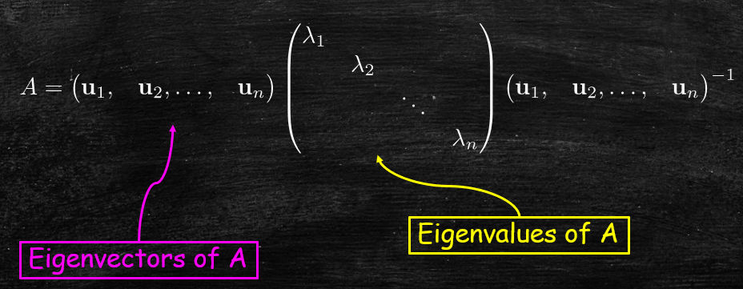
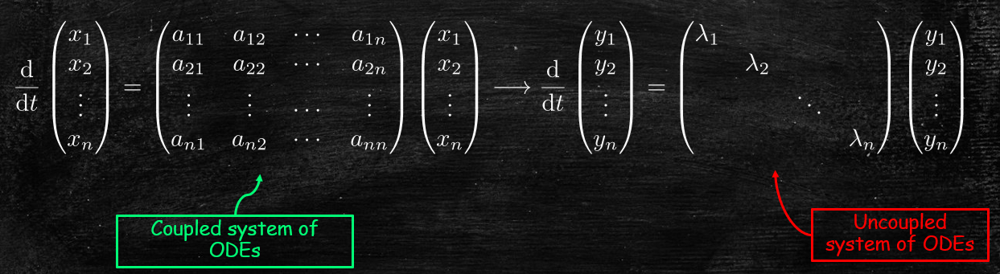
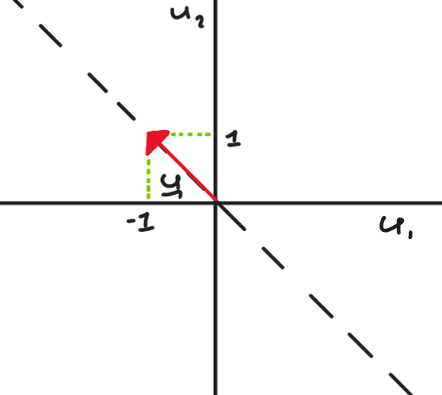

Jonathan Crofts
Nottingham Trent University
Recall that if $A$ is a real, symmetric matrix then there exists an invertible matrix $P$ such that
\[ A = PDP^{-1} \]$P$ is called a similarity transformation
That is
Importantly we can use this decompostion to solve systems of linear equations such as that discussed in last weeks lecture
For example, we can transform a linear system of ODEs as follows:
\[ \frac{\mathrm{d}\mathbf{x}}{\mathrm{d}t} = A\mathbf{x} \longrightarrow \frac{\mathrm{d}\mathbf{y}}{\mathrm{d}t} = D\mathbf{y} \]Or
To transform from the coupled to the uncoupled system we start by introducing a change of variable:
\[ \color{red}{\boxed{\color{white}{ \mathbf{y} = P^{-1}\mathbf{x} }}} \]To see why, use the matrix decomposition to rewrite $\displaystyle \mathrm{d}\mathbf{x}/\mathrm{d}t = A\mathbf{x}$ as
\[ \frac{\mathrm{d}\mathbf{x}}{\mathrm{d}t} = PDP^{-1}\mathbf{x}\quad \text{or}\quad \frac{\mathrm{d}\left(P^{-1}\mathbf{x}\right)}{\mathrm{d}t} = DP^{-1}\mathbf{x} \]which reduces to
\[ \frac{\mathrm{d}\mathbf{y}}{\mathrm{d}t} = D\mathbf{y} \]once we make the change of variables
As we shall see, for diagonal matrices $D$ the above system is trivial to solve
To see how this transformation simplifies matters consider the first equations for each of the two (coupled and uncoupled) systems
The first $x$-equation is given by
\[ \frac{\mathrm{d}x_1}{\mathrm{d}t} = a_{11}x_1+a_{12}x_2+\cdots+a_{1n}x_n \]Whereas the first $y$-equation is given by
\[ \frac{\mathrm{d}y_1}{\mathrm{d}t}=\lambda_1y_1 \]which is a separable ODE and so easy to solve
Since the right-hand side of the $y_1$-equation only involves $y_1$ terms it is said to be uncoupled (i.e. it doesn't depend on the other unkowns $y_2, y_3,\ldots y_n$) and so can be solved using standard techniques
Solve the differential equation
\[ \frac{\mathrm{d}\mathbf{x}}{\mathrm{d}t} = A\mathbf{x} = \begin{bmatrix}-3&1\\1&-3\end{bmatrix}\mathbf{x} \]The eigenvalues are obtained by solving
\[ |A-tI_2| = \begin{vmatrix}-3-t&1\\1&-3-t\end{vmatrix} = t^2+6t+8=(t+2)(t+4) \]So the eigenvalues are $\lambda_{1,2} = -2, -4$
To find the eigenvectors we solve the linear system $\displaystyle \left(A-\lambda I_2\right)\mathbf{u}=\mathbf{0}$
$\lambda=\lambda_1=-2$:
\[ \begin{bmatrix}-1&1\\1&-1\end{bmatrix}\begin{bmatrix}u^{(1)}\\u^{(2)}\end{bmatrix} = \begin{bmatrix}0\\0\end{bmatrix} \implies \begin{bmatrix}1&-1\\0&0\end{bmatrix} \begin{bmatrix}u^{(1)}\\u^{(2)}\end{bmatrix} = \begin{bmatrix}0\\0\end{bmatrix}\implies \color{red}{\boxed{\color{white}{\mathbf{u} = \alpha\begin{bmatrix}1\\1\end{bmatrix}}}} \]$\lambda=\lambda_2=-4$:
\[ \begin{bmatrix}1&1\\1&1\end{bmatrix}\begin{bmatrix}u^{(1)}\\u^{(2)}\end{bmatrix} = \begin{bmatrix}0\\0\end{bmatrix} \implies \begin{bmatrix}1&1\\0&0\end{bmatrix} \begin{bmatrix}u^{(1)}\\u^{(2)}\end{bmatrix} = \begin{bmatrix}0\\0\end{bmatrix}\implies \color{red}{\boxed{\color{white}{\mathbf{u} = \alpha\begin{bmatrix}-1\\1\end{bmatrix}}}} \]Thus
\[ P = \begin{bmatrix}1&-1\\1&1\end{bmatrix} \text{ and } D = \begin{bmatrix}-2&0\\0&-4\end{bmatrix}\implies \frac{\mathrm{d}\mathbf{y}}{\mathrm{d}t} = \begin{bmatrix}-2&0\\0&-4\end{bmatrix}\mathbf{y} \]We can rewrite this system as a pair of ODEs
\[ \begin{align*} \frac{\mathrm{d}y^{(1)}}{\mathrm{d}t} &= -2y^{(1)}\\ \frac{\mathrm{d}y^{(2)}}{\mathrm{d}t} &= -4y^{(2)} \end{align*} \]and since these ODEs are separable they are readily solved to give
\[ \begin{align*} y^{(1)}(t) &= Ae^{-2t}\\ y^{(2)}(t) &= Be^{-4t} \end{align*} \implies \color{#00FF00}{\boxed{\color{white}{ \mathbf{x}(t) = P\mathbf{y}(t) = \begin{bmatrix}Ae^{-2t}-Be^{-4t}\\Ae^{-2t}+Be^{-4t}\end{bmatrix}}}} \]Question: What happens when $A$ is not symmetric?
Consider for example
\[ A = \begin{bmatrix}1&-1\\1&3\end{bmatrix} \]To diagonalise $A$ we need to compte the matrix of eigenvalues
\[ D = \begin{bmatrix}\lambda_1&0\\0&\lambda_2\end{bmatrix} \]and the corresponding matrix of eigenvectors
\[ P = \begin{bmatrix}\mathbf{u}_1 &\mathbf{u}_2\end{bmatrix} \]Let us proceed to work out the eigenvalues and eigenvectors of this matrix...
The characteristic polynomial of $\displaystyle A = \begin{bmatrix}1&-1\\1&3\end{bmatrix}$ is given by
\[ \begin{align*} \chi_A(t) &= |A-tI_2|\\ &= \begin{vmatrix}1-t&-1\\1&3-t\end{vmatrix}\\ &=(1-t)(3-t)+1\\ &= t^2-4t+4 = \color{red}{\boxed{\color{white}{(t-2)^2}}} \end{align*} \]Therefore
\[ \lambda_1=\lambda_2 = 2 \]that is, 2 is the only eigenvalue of $A$; we say that the eigenvalue has algebraic multiplicity of 2
Let us compute the corresponding eigenspace to $\lambda=2$
To do so, we solve the following eigenvalue-eigenvector problem:
\[ \left(A-\lambda I_2\right)\mathbf{u} = \left(A-2 I_2\right)\mathbf{u} = 0 \]or
\[ \begin{bmatrix}-1&-1\\1&1\end{bmatrix}\begin{bmatrix}u_1\\u_2\end{bmatrix} = 0 \implies \begin{bmatrix}1&1\\0&0\end{bmatrix}\begin{bmatrix}u_1\\u_2\end{bmatrix}=0 \]Solving this equation we obtain the eigenspace
\[ \Biggl \{ \alpha\begin{bmatrix}-1\\1\end{bmatrix}: \alpha\in\mathbb{R} \Biggr \} \]What does the eigenspace look like geometrically?
Notably we have only found one eigenvector and so we can not construct a similarity transformation $P$ with which to diagonalise our matrix
Let us come back to that last point
Since the eigenspace is one-dimensional (it is a linear space spanned by a single basis vector ($\displaystyle \begin{bmatrix} -1&1\end{bmatrix}^T$ in our example))
\[ \Biggl \{ r\begin{bmatrix}-1\\1\end{bmatrix}: r\in\mathbb{R} \Biggr \} \]i.e. it is a line
We have that the geometric multiplicity (GM) of the eigenvalue $\lambda=-2$ equals one
It can be proven that in order for a matrix to be diagonalisable the condition $AM=GM$ must be staisfied for all eigenvalues
This is equivalent to saying that we have $n$ linearly independent eigenvectors
In our example we have $AM=2>GM=1$ so A is not diagonalisable
Note that the AM is always greater than or equal to the GM
We can however find a matrix $P$ such that
\[ A = PJP^{-1} \quad\text{with}\quad J = \begin{bmatrix}2&1\\0&2\end{bmatrix} \]The matrix $J$ is the Jordan normal form of the matrix $A$
For example, the matrix
\[ P = \begin{bmatrix}-1&0\\1&1\end{bmatrix} \] is such that \[ P^{-1}AP = \begin{bmatrix}2&1\\0&2\end{bmatrix} \]Whilst we can't always diagonalise a matrix we can always transform it to its Jordan normal form
More generally, it can be shown that for any real matrix $\displaystyle A\in\mathbb{R}^{n\times n}$ one can always decompose it as
\[ A = PJP^{-1} \]where
\[ J = \begin{bmatrix}J_{n_1}(\lambda_1)&&\\&\ddots&\\&&J_{n_k}(\lambda_k)\end{bmatrix} \qquad n_1+n_2+\cdots+n_k=n \]is a block diagonal matrix with blocks of the form
\[ J_{n_i}(\lambda_i) = \begin{bmatrix}\lambda_i&1&\\&\ddots&1\\&&\lambda_i\end{bmatrix}\in\mathbb{R}^{n_i\times n_i} \]In the example on the previous slide the matrix $J$ consisted of a single Jordan block of dimension $2$ (i.e. $n=n_1=2$)
Determine the Jordan blocks of the matrices
\[ \begin{bmatrix}2&0&0\\0&2&0\\0&0&2\end{bmatrix}, \quad \begin{bmatrix}2&0&0\\0&2&1\\0&0&2\end{bmatrix} \quad \text{and} \begin{bmatrix}2&1&0\\0&2&1\\0&0&2\end{bmatrix} \]The first matrix consists of three one by one blocks:
\[ J = \begin{bmatrix}2&0&0\\0&2&0\\0&0&2\end{bmatrix} = \begin{bmatrix}J_1(2)&&\\&J_1(2)&\\&&J_1(2)\end{bmatrix} \]The second consists of two blocks and the third a single block:
\[ J = \begin{bmatrix}2&0&0\\0&2&1\\0&0&2\end{bmatrix} = \begin{bmatrix}J_1(2)&\\&J_2(2)\end{bmatrix}\qquad J = \begin{bmatrix}2&1&0\\0&2&1\\0&0&2\end{bmatrix} = J_3(2) \]